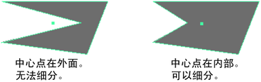

可以将多边形面细分到三角形或四边形中。将以指数或线性方式添加分段。若要了解两者的差异，请参见平滑选项。

拆分面
- 选择要拆分的面，然后选择“编辑网格 > 添加分段”(Edit Mesh > Add Divisions)，或者单击建模工具包中的
 。
。
- 在显示的视图中编辑器中，编辑 polySubdFace 节点选项：
- 将“添加分段”(Add divisions)设置为“指数”(Exponentially)或“线性”(Linearly)。
“指数”(Exponentially)以递归方式细分面或边。“线性”(Linearly)设置将面细分为绝对分段数。此外，通过“线性”(Linearly)设置，可以按 U 向和 V 向指定细分。
- 设定“分段级别”(Division Levels)，以便根据“添加分段”(Add divisions)设置来指定选定面出现的细分数。
- “指数”(Exponentially)控件允许您将“模式”(Mode)指定为三角形或四边形。
- 将“添加分段”(Add divisions)设置为“指数”(Exponentially)或“线性”(Linearly)。
“添加分段”(Add Divisions)功能疑难解答
- 面无法细分
-
无法在包含洞的面上使用“添加分段”(Add Divisions)功能。另外，除非中心点在面内部，否则无法细分凹面。
若要将凹面细分为凸部位，请使用多切割工具(Multi-Cut Tool)或网格 > 三角算法(Mesh > Triangulate)。使用“三角算法”移除洞。